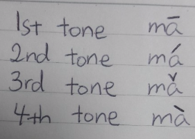

Chinese is a tonal language, and tones are very important.
If you want to speak Mandarin Chinese, you must first be able to pronounce each character correctly by understanding the pinyin pronunciation system and the four tones. Pinyin is just the Roman alphabet that helps and guides you through pronouncing the Chinese characters. The tones are basically the pitch of the sound, for instance, the rising tone or the falling tone. There are 4 tones in Mandarin Chinese. Pinyin is the first thing primary school students learn when they become 1st graders.
Suppose there is a pinyin as such: ma. Think of 'ma' as the first syllable in the word 'mother'. Before we go on and learn the pronunciation of 'ma', let's first write them out in the 4 tones. Please look at the following picture carefully.

As you can see, there are 4 ways of speaking 'ma'. The first tone (with the straight line above 'a') is said starting out from a high pitch and staying that way. The second tone (with the diagonal line from bottom-left to top-right) is said starting out from a low pitch and the pitch get higher. The third tone (with the falling and rising line) is said with a falling pitch and with a gentle rising pitch. The fourth tone is somewhat like the accent in English words; it is said with a quick strong stress. As it is difficult to explain how a tone is pronounced in written language, I will record my voice so that you can have a general idea. By all means, I may not have the best pronunciation, but I am sure you will get the general picture.
The 1st tone.
The 2nd tone.
The 3rd tone.
The 4th tone.
All together.